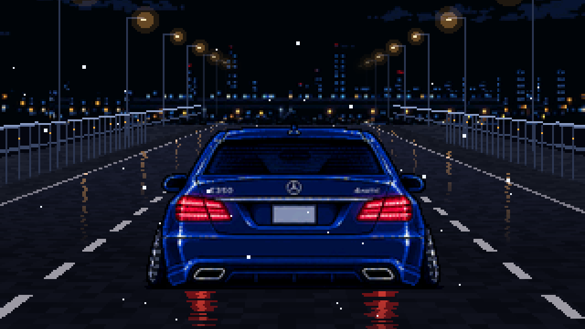
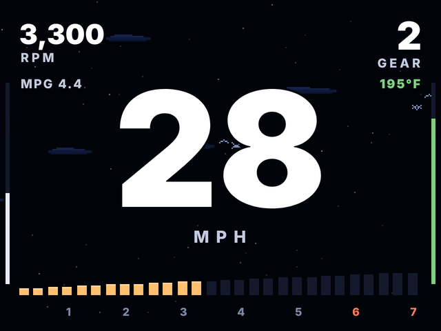
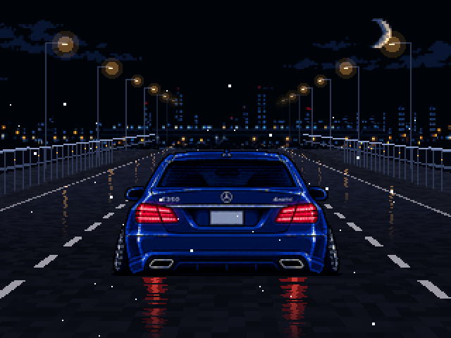

Two ways to fit your gauge, drawn to scale. Both use real frames from your W212 Gauge Test Bench at 28 mph in 2nd.

The glass fills your vent almost edge to edge. The catch is the board: the Waveshare 4.3B is 112 × 75 mm, so it won't fit. You need a 4.3-inch board whose electronics sit behind the screen.


This reuses your current firmware layout exactly, so nothing needs porting. Mount it to the lower pillar and dash corner, not across the pillar trim seam: the W212's curtain airbags deploy from the headliner and pillar edge, and a pod there could block them or get thrown.